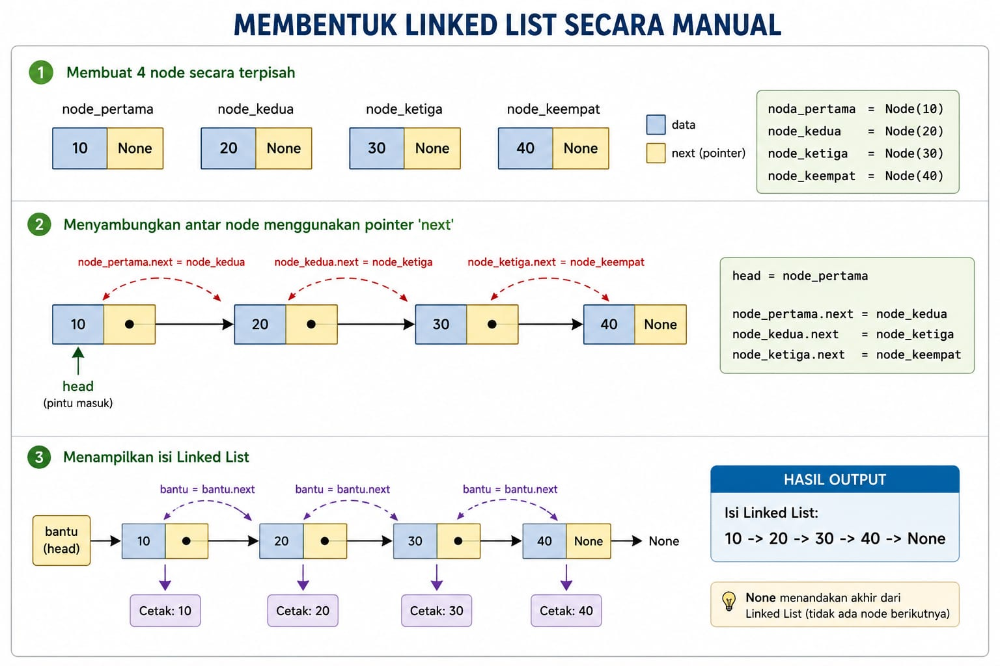

Linkend list
Linked List adalah struktur data linear yang digunakan untuk menyimpan sekumpulan data. Berbeda dengan Array yang menyimpan data di memori secara berurutan dan berdampingan, Linked List menyimpan data secara acak di memori.
Untuk menghubungkan data satu dengan yang lain, Linked List menggunakan konsep Pointer (penunjuk). Struktur ini terdiri dari serangkaian elemen yang disebut Node (Simpul). Setiap Node memiliki dua bagian utama:
1. Data: Nilai atau informasi yang ingin disimpan..
2. Next: Penunjuk (pointer) yang menyimpan alamat memori dari node berikutnya.
Istilah Penting dalam Linked List:
Head: Node pertama yang menjadi pintu masuk utama ke seluruh Linked List.
Tail: Node terakhir dalam Linked List. Ciri utamanya adalah pointer next-nya selalu menunjuk ke None (kosong), menandakan akhir dari list.
Ilustrasi

Implementasi Python
# 1. Definisikan struktur untuk satu Node
class Node:
def __init__(self, data):
self.data = data # Menyimpan nilai data
self.next = None # Pointer ke node berikutnya (awalnya kosong)
# 2. Fungsi untuk menampilkan seluruh isi Linked List
def cetak_list(head):
bantu = head # Pointer bantuan untuk berjalan dari depan
# Lakukan perulangan selama pointer bantuan tidak menemukan ujung kosong (None)
while bantu is not None:
print(bantu.data, end=" -> ")
bantu = bantu.next # Geser pointer bantuan ke node selanjutnya
print("None") # Menandakan akhir dari Linked List
# MEMBENTUK STRUKTUR LINKED LIST MANUALLY
# Membuat 4 node secara terpisah
node_pertama = Node(10)
node_kedua = Node(20)
node_ketiga = Node(30)
node_keempat = Node(40)
# Menentukan Head (pintu masuk utama)
head = node_pertama
# Menyambungkan antar node menggunakan pointer 'next'
node_pertama.next = node_kedua # 10 menunjuk ke 20
node_kedua.next = node_ketiga # 20 menunjuk ke 30
node_ketiga.next = node_keempat # 30 menunjuk ke 40
# Menampilkan isi Linked List
print("Isi Linked List:")
cetak_list(head)
Penjelasan Kodde :
Cara Kerja Algoritma
Fungsi cetak_list menggunakan variabel bantuan bernama bantu untuk menelusuri rantai dari awal hingga akhir tanpa merusak posisi head asli.
Berikut adalah simulasi jalannya perulangan while bantu is not None:
1. Persiapan: Variabel bantu diatur agar menunjuk ke node yang sama dengan head (yaitu node_pertama yang berisi data 10).
2. Iterasi 1: * Apakah bantu bernilai None? Tidak (karena isinya adalah Node 10).
Program mengeksekusi print(bantu.data), maka angka 10 -> dicetak ke layar.
Program mengeksekusi bantu = bantu.next. Variabel bantu sekarang berpindah memegang Node berikutnya, yaitu Node 20.
3. Iterasi 2: * Apakah bantu bernilai None? Tidak (isinya Node 20).
Program mencetak data, menghasilkan 20 ->.
Variabel bantu bergeser lagi menggunakan bantu.next, sekarang memegang Node 30.
4. Iterasi 3: * Apakah bantu bernilai None? Tidak (isinya Node 30).
Program mencetak data, menghasilkan 30 ->.
Variabel bantu bergeser memegang Node 40.
5. Iterasi 4: * Apakah bantu bernilai None? Tidak (isinya Node 40).
Program mencetak data, menghasilkan 40 ->.
Variabel bantu bergeser ke bantu.next. Karena node_keempat.next bernilai None, maka variabel bantu sekarang menjadi None.
6. Keluar Perulangan: * Program kembali memeriksa kondisi while. Karena bantu sudah bernilai None, perulangan berhenti.
Program mengeksekusi perintah terakhir di luar loop: print("None").
Output Akhir di Layar: 10 -> 20 -> 30 -> 40 -> None